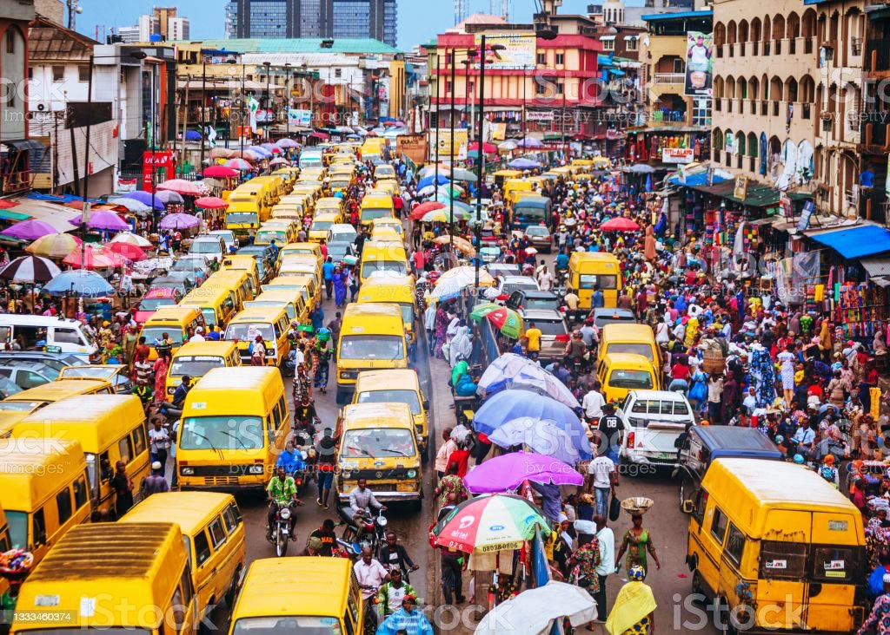
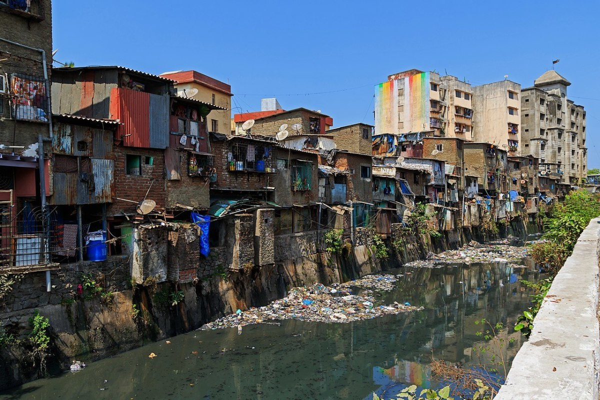
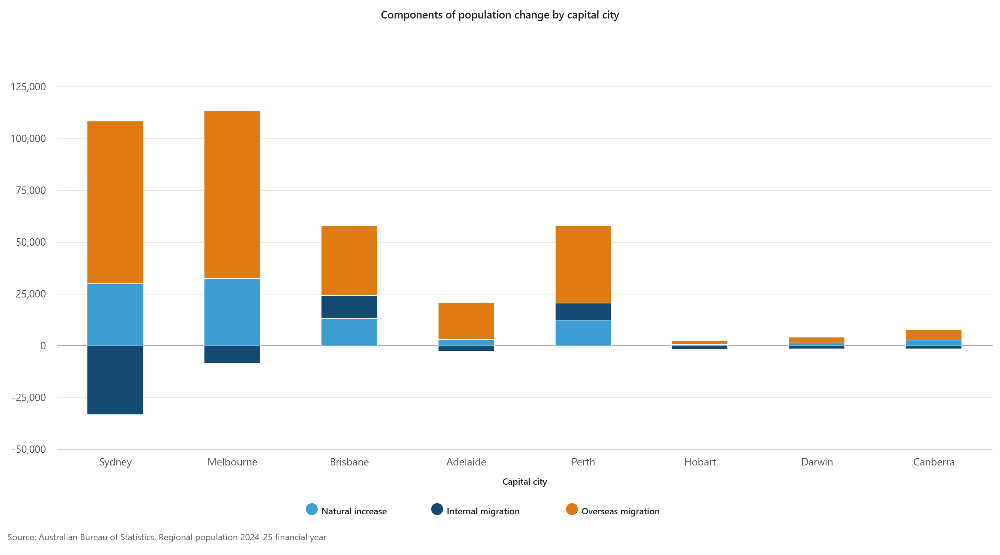
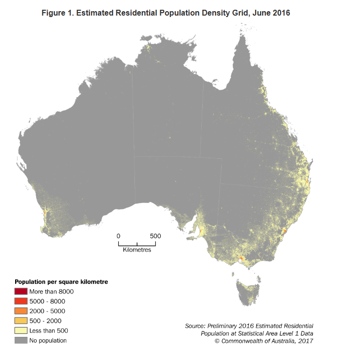
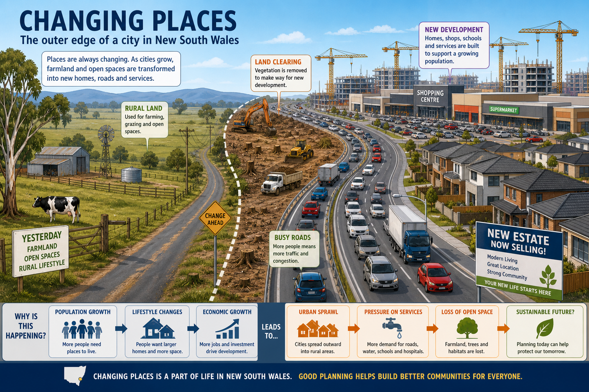
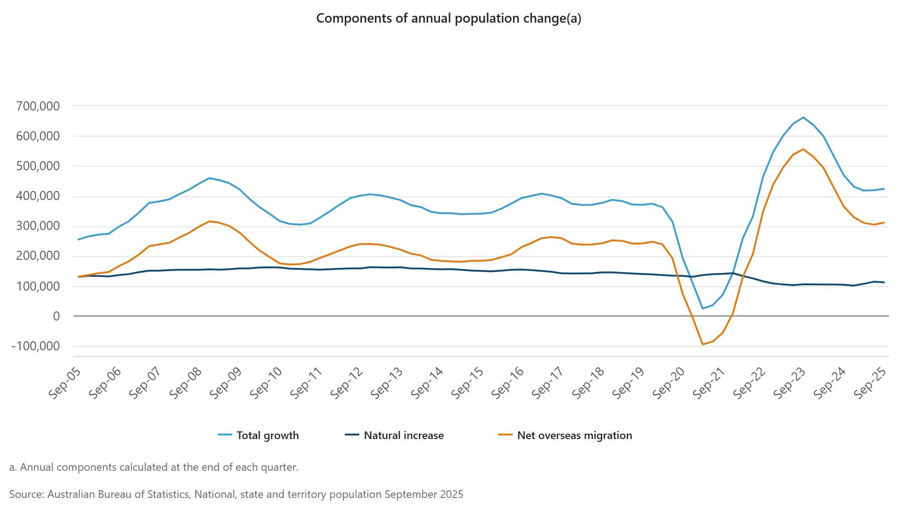

Section 1 — Megacities in the developing world
Use the photographs of Lagos and Mumbai to answer Questions 1–6.


Q1 What is a megacity?
Q2 Which statement best explains why Lagos and Mumbai are considered megacities?
Q3 The Lagos photograph suggests which urban issue most clearly?
Q4 The Mumbai image most strongly suggests a problem with:
Q5 Megacities in the developing world often grow quickly because people move to them looking for work and services.
Q6 Which comparison is most accurate?
Section 2 — Problems faced by megacities
Answer Questions 7–10 about challenges in large urban areas.
Q7 Which problem is most likely when population growth is faster than infrastructure growth?
Q8 Informal settlements usually develop because:
Q9 High levels of congestion can reduce quality of life in megacities.
Q10 Which response is most likely to improve living conditions in a rapidly growing megacity?
Section 3 — Australia, cities and rural places
Answer Questions 11–14 about differences between Australian cities and rural areas.
Q11 Compared with remote rural places, Australian major cities usually have:
Q12 Which is a likely advantage of living in a rural place?
Q13 Regional centres may attract people who want a balance between jobs and lifestyle.
Q14 Which statement best explains why some Australians move from capital cities to regional centres?
Section 4 — Fast-growing regional centres
Use the chart to answer Questions 15–18.

Q15 According to the chart, which capital cities appear to have the largest overall population increase?
Q16 Which component contributes strongly to growth in several capital cities on the chart?
Q17 Internal migration is the movement of people within Australia.
Q18 Why might some regional centres in Australia grow quickly?
Section 5 — Where Australians live
Use the population map to answer Questions 19–22.

Q19 Which part of Australia has the highest population density overall?
Q20 Why do fewer Australians live in the centre of the continent?
Q21 Most Australians live close to the coast.
Q22 Which explanation best matches the map?
Section 6 — Push and pull factors
Read the case study and answer Questions 23–25.
Case study: Riley lives in a small inland town in New South Wales. The local hospital has fewer services than before, several shops have closed, and there are limited job options after school. Riley is thinking about moving to a larger regional city or capital city where there are universities, more jobs, public transport and a wider choice of services.
Q23 Which factor is a push factor in Riley’s town?
Q24 Which factor is a pull factor attracting Riley to the city?
Q25 Push and pull factors can help explain why people move from rural places to urban places.
Section 7 — Growth of urban areas
Use the cartoon to answer Questions 26–28.

Q26 What major change in land use is shown in the cartoon?
Q27 Which problem linked to urban sprawl is shown most clearly?
Q28 Good planning can reduce some negative effects of urban growth.
Section 8 — Australia’s international migration
Use the migration chart to answer Questions 29–30.
